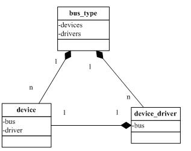
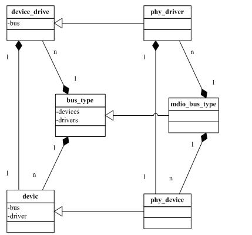
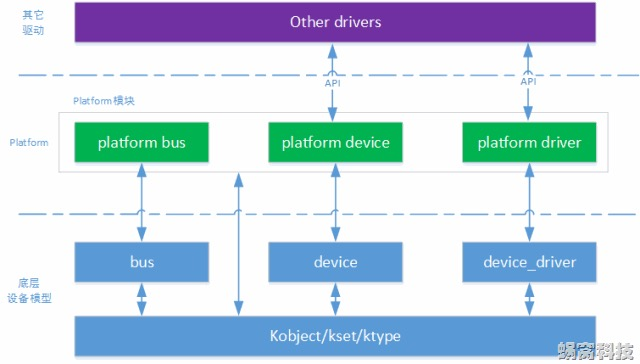
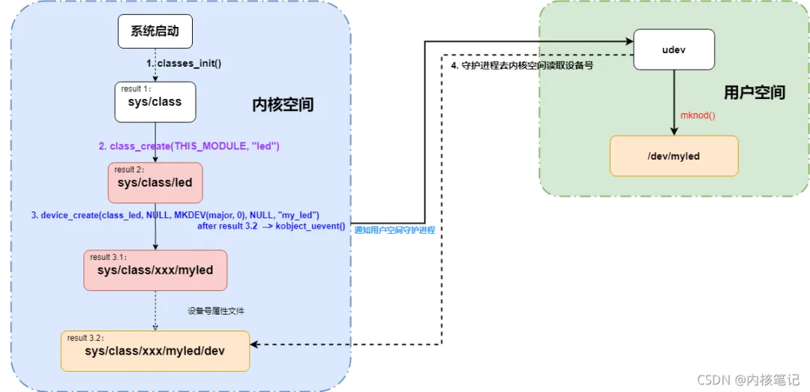
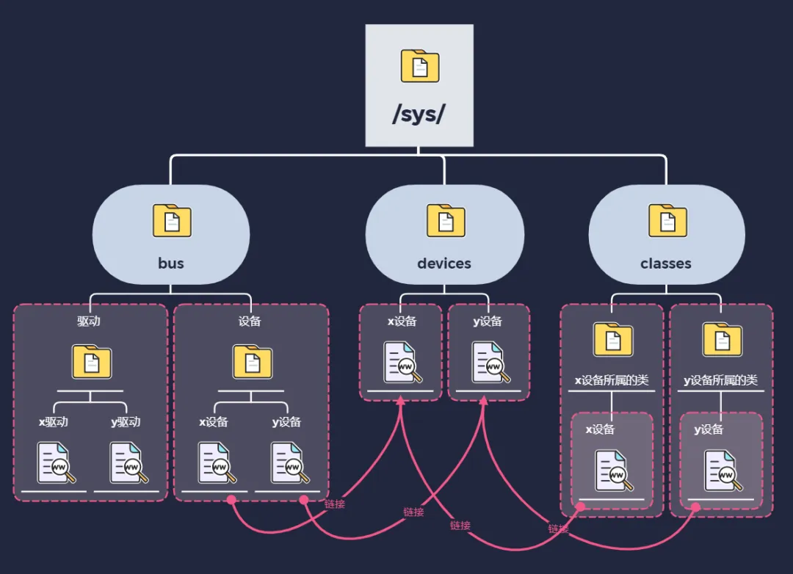
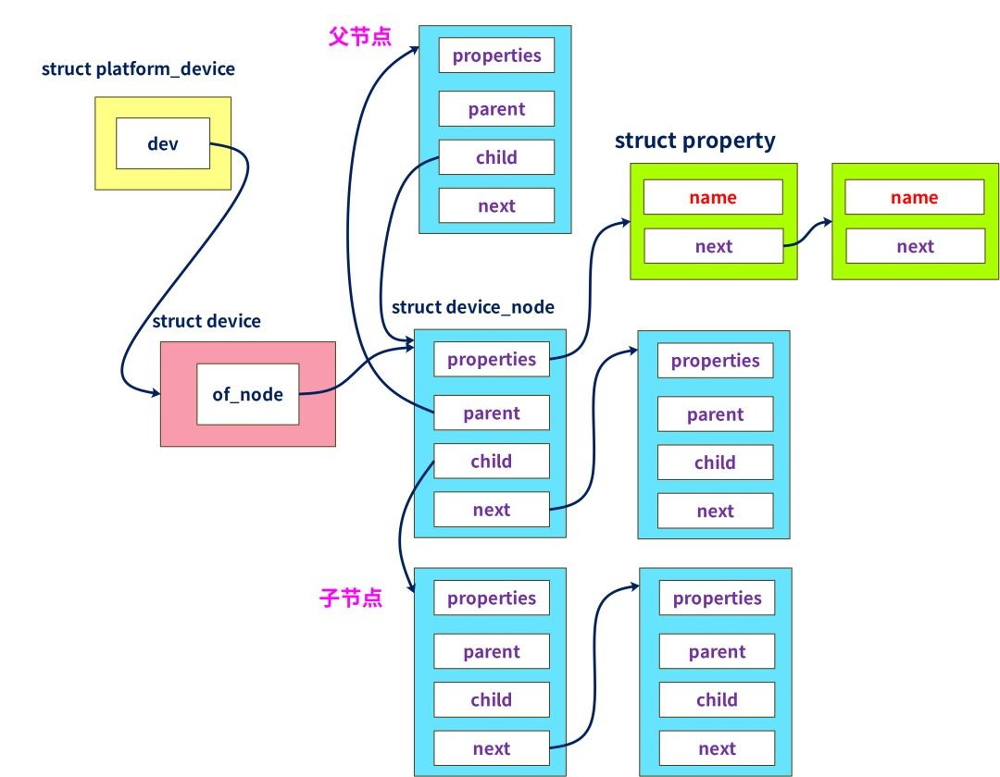

概述
-
Linux 系统的驱动框架主要就是三个主要部分组成，
驱动、总线、设备。 -
随着电子行业的发展，控制器越来越强大，SOC（片上系统）出现了：在片内的 CPU 外围集成很多外设电路，这些外设都挂接在 SOC 内部的总线上。
-
不同于 IIC、SPI 和 USB 等这一类实际存在外部 PCB 走线总线，片内外设从 Chip 之外是看不到的。
-
为了统一驱动架构抽象，所以 Linux 从 2.6 版本开始引入了
platform bus这个虚拟的总线模型。
一 初识内核驱动框架
1.数据结构
这个框架涉及到 3 个比较重要的数据结构：
struct bus_type用来描述总线struct device用来描述设备struct device_driver用来描述设备驱动
有如下拓扑图
-

-
内核中可以有很多的总线bus_type
- 总线bus_type上可以有很多的设备device
- 每个设备device都有它所对应的驱动device_driver
struct bus_type { //…..省略一些成员
const char * name;
struct kset drivers;
struct kset devices;
int (*match)(struct device * dev, struct device_driver * drv);
int (*uevent)(struct device *dev, struct kobj_uevent_env *env);
int (*probe)(struct device * dev);
int (*remove)(struct device * dev);
void (*shutdown)(struct device * dev);
int (*suspend)(struct device * dev, pm_message_t state);
int (*suspend_late)(struct device * dev, pm_message_t state);
int (*resume_early)(struct device * dev);
int (*resume)(struct device * dev);
unsigned int drivers_autoprobe:1;
};
struct device { //…..省略一些成员
struct klist klist_children;
struct klist_node knode_parent; /* node in sibling list */
struct klist_node knode_driver;
struct klist_node knode_bus;
struct device *parent;
char bus_id[BUS_ID_SIZE; /* position on parent bus */
struct bus_type * bus; /* type of bus device is on */
struct device_driver *driver; /* which driver has allocated this device */
void *driver_data; /* data private to the driver */
void *platform_data; /* Platform specific data, device core doesn't touch it */
};
struct device_driver { //…..省略一些成员
const char * name;
struct bus_type * bus;
int (*probe) (struct device * dev);
int (*remove) (struct device * dev);
void(*shutdown) (struct device * dev);
int (*suspend) (struct device * dev, pm_message_t state);
int (*resume) (struct device * dev);
};
-

-
按照面向对象的思想，
-
- bus_type虚基类，子类包括 platform_bus_type,mdio_bus_type,I2C_bus_type,pci_bus_type 等
-
- device是虚基类，子类包括 platform_device, phy_device, i2c_CLIent, pci_device 等
-
- device_driver虚基类，子类有 platform_driver, phy_driver,i2c_driver, pci_driver 等
2.API
-
框架有几个关键 API：
-
- bus_register(stuct bus_type* bus) 用来注册一条总线 bus
-
- device_register(struct device *dev) 把 dev 加到 bus 的设备列表中去
-
- driver_register(stuct device_driver *drv)
-
-
- 1 遍历 bus 上所有的 dev，调用
bus->match(dev,drv)对 drv 与 dev 进行比对, 本质上是比对 drv.name 和 dev.name 是否一致
- 1 遍历 bus 上所有的 dev，调用
-
-
-
- 2 比对成功后调用
drv->probe(dev), 比如 igb 网卡的 igb_probe 函数执行时,会设置好对应的 netdevice_ops 结构体,里面包含 open,read,write 等通用操作，这些通用操作都是指针，指向具体驱动的函数比如 open 指针指向 igb_open 函数.
- 2 比对成功后调用
-
-
-
- 3 把驱动 drv 加入到 bus 的驱动列表中去
-
-
-
- 4 绑定 drv 和 dev
-
为了便于使用，内核针对不同总线，对上述 API 进行了包装，衍生出了另外一批 API：
- platform_driver_register
- platform_device_register
- phy_driver_register
- mdiobus_register
二 platform_device 和 platform_driver 架构图
-
platform 平台设备驱动是基于设备总线驱动模型的，机制本身并不复杂，由两部分组成：
platform_device和platfrom_driver -
platform_device：基于device的封装
-
platform_driver：基于device_driver的封装

三 基础层: Linux 设备驱动模型和 sysfs 文件系统
3.1 sysfs基础介绍
Linux 内核在 2.6 版本中引入设备驱动模型，简化了驱动程序的编写。Linux 设备驱动模型包含设备(device)、总线(bus)、类(class)和驱动(driver)，它们之间相互关联。其中设备(device)和驱动(driver)通过总线(bus)绑定在一起。
Linux 内核中，分别用 bus_type、device_driver 和 device 结构来描述总线、驱动和设备，结构体定义详见 include/linux/device.h。设备和对应的驱动必须依附于同一种总线，因此 device_driver 和 device 结构中都包含 struct bus_type 指针。
Linux sysfs 是一个虚拟的文件系统，它把连接在系统上的设备和总线组织成为一个分级的文件，可以由用户空间存取，向用户空间导出内核数据结构以及它们的属性。
sysfs 展示出设备驱动模型中各个组件的层次关系，某个系统上的 sysfs 顶层目录展示如下：
/sys$ ll
total 0
drwxr-xr-x 2 root root 0 Aug 20 15:27 block/
drwxr-xr-x 29 root root 0 Aug 20 15:27 bus/
drwxr-xr-x 61 root root 0 Aug 20 15:27 class/
drwxr-xr-x 4 root root 0 Aug 20 15:27 dev/
drwxr-xr-x 14 root root 0 Aug 20 15:27 devices/
drwxr-xr-x 4 root root 0 Aug 20 15:27 firmware/
drwxr-xr-x 8 root root 0 Aug 20 15:27 fs/
drwxr-xr-x 2 root root 0 Sep 2 17:08 hypervisor/
drwxr-xr-x 8 root root 0 Aug 20 15:27 kernel/
drwxr-xr-x 147 root root 0 Aug 20 15:27 module/
drwxr-xr-x 2 root root 0 Aug 20 15:27 power/
重要子目录介绍：
block: 包含所有的块设备，如ram，sda等bus: 包含系统中所有的总线类型，如pci，usb，i2c等class: 包含系统中的设备类型，如input，pci_bus，mmc_host等dev: 包含两个子目录：char和block，分别存放字符设备和块设备的主次设备号(major:minor)，指向/sys/devices目录下的设备devices:包含系统所有的设备
3.2 class 设备大管家
-
一个类是一个设备的高级视图, 它抽象出低级的实现细节. 驱动可以见到一个
SCSI磁盘或者一个ATA磁盘，在类的级别，它们都是磁盘。类允许用户空间基于它们做什么来使用设备，而不是它们如何被连接或者它们如何工作。 -
几乎所有的类都在
sysfs中在/sys/class下出现。
因此：
-
- 例如所有的网络接口可在 /sys/class/net 下发现，不管接口类型；
-
- 输入设备可在 /sys/class/input 下；
-
- 串行设备在 /sys/class/tty；
-
- 一个例外是块设备, 由于历史的原因在 /sys/block
3.2.1 设备管理流程
设备管理流程：
- 先调用
register_chrdev()注册设备（提交file_operations结构体） - 再调用
class_create()创建类用于相同类型的设备管理 - 最后调用
device_create()，将注册的设备归于某一类下，记得传入设备号，这样才能找到第一步注册的设备

3.2.2 创建一个class
3.2.3 在class下添加kobject对象
3.2.4 class小结
class主要对系统中的设备进行分类，而该设备类主要是用于将系统中已创建的设备归到各自类型中，而class目录中各类别主要是对device目录的链接

3.3 sysfs和kobject介绍
sysfs 中显示的每一个对象都对应一个 kobject 结构（完整定义位于 include/linux/kobject.h，结构内部包含一个 parent 指针），而另一个相联系的结构为 kset。kset 是嵌入相同类型结构的 kobject 对象的集合。 内核用 kobject、kset 和 parent 之间的关系将各个对象连接起来组成一个分层的结构体系，从而与模型化的子系统相匹配。
sysfs 中能清晰地看出 device、driver 和 bus 的相互联系，以某系统上 pci 总线上的 igb 驱动为例。
省略
对于早期的 Linux 内核（2.6 版本以前）来说，通常在驱动代码中xxx_driver注册过程中调用 probe()函数来对设备进行初始化。
引入 Linux 设备驱动模型下，设备和驱动可以分开注册(比如分两个内核模块, XXXX_device.ko 文件和 XXXX_driver.ko 文件), 依赖总线完成相互绑定。系统每注册一个设备的时候，会寻找与之匹配的驱动；相反，系统每注册一个驱动的时候，会寻找与之匹配的设备。这个过程中，设备和驱动的匹配工作由总线完成。
下文中将会用关键的内核源码（基于 linux 5.2.14 Kernel）说明驱动和设备间匹配机制的实现，分析的过程中以platform总线为例。
platform总线是一种虚拟的总线，与之相对应的是PCI、I2C、SPI等实体总线。引入虚拟platform总线是为了解决某些设备无法直接依附在现有实体总线上的问题，例如SoC系统中集成的独立外设控制器，挂接在 SoC 内存空间的外设等等。
3.4 platform 总线的注册
platform总线作为 Linux 的基础总线，在内核启动阶段便完成了注册，注册的入口函数为platform_bus_init()。内核启动阶段调用该函数的路径为：
start_kernel() --> arch_call_rest_init()[last step in start_kernel]
--> rest_init() --> kernel_init()
--> kernel_init_freeable() --> do_basic_setup()
--> driver_init() --> platform_bus_init()
3.4.1 代码定义
include/linux/device.h
struct platform_device
struct platform_device {
const char *name;
u32 id;
struct device dev;
u32 num_resources;
struct resource *resource;
};
struct platform_driver
struct platform_driver {
int (*probe)(struct platform_device *);
int (*remove)(struct platform_device *);
void (*shutdown)(struct platform_device *);
int (*suspend)(struct platform_device *, pm_message_t state);
int (*suspend_late)(struct platform_device *, pm_message_t state);
int (*resume_early)(struct platform_device *);
int (*resume)(struct platform_device *);
struct device_driver driver;
};
struct device
struct device {
struct device *parent;
struct device_private *p;
struct kobject kobj;
const char *init_name; /* initial name of the device */
const struct device_type *type;
struct mutex mutex; /* mutex to synchronize calls to
* its driver.
*/
struct bus_type *bus; /* type of bus device is on */
struct device_driver *driver; /* which driver has allocated this
device */
void *platform_data; /* Platform specific data, device
core doesn't touch it */
void *driver_data; /* Driver data, set and get with
dev_set/get_drvdata */
struct dev_links_info links;
struct dev_pm_info power;
struct dev_pm_domain *pm_domain;
#ifdef CONFIG_GENERIC_MSI_IRQ_DOMAIN
struct irq_domain *msi_domain;
#endif
#ifdef CONFIG_PINCTRL
struct dev_pin_info *pins;
#endif
#ifdef CONFIG_GENERIC_MSI_IRQ
struct list_head msi_list;
#endif
#ifdef CONFIG_NUMA
int numa_node; /* NUMA node this device is close to */
#endif
const struct dma_map_ops *dma_ops;
u64 *dma_mask; /* dma mask (if dma'able device) */
u64 coherent_dma_mask;/* Like dma_mask, but for
alloc_coherent mappings as
not all hardware supports
64 bit addresses for consistent
allocations such descriptors. */
u64 bus_dma_mask; /* upstream dma_mask constraint */
unsigned long dma_pfn_offset;
struct device_dma_parameters *dma_parms;
struct list_head dma_pools; /* dma pools (if dma'ble) */
struct dma_coherent_mem *dma_mem; /* internal for coherent mem
override */
#ifdef CONFIG_DMA_CMA
struct cma *cma_area; /* contiguous memory area for dma
allocations */
#endif
/* arch specific additions */
struct dev_archdata archdata;
struct device_node *of_node; /* associated device tree node */
struct fwnode_handle *fwnode; /* firmware device node */
dev_t devt; /* dev_t, creates the sysfs "dev" */
u32 id; /* device instance */
spinlock_t devres_lock;
struct list_head devres_head;
struct klist_node knode_class;
struct class *class;
const struct attribute_group **groups; /* optional groups */
void (*release)(struct device *dev);
struct iommu_group *iommu_group;
struct iommu_fwspec *iommu_fwspec;
bool offline_disabled:1;
bool offline:1;
bool of_node_reused:1;
};
struct device_driver
struct device_driver {
const char *name;
struct bus_type *bus;
struct module *owner;
const char *mod_name; /* used for built-in modules */
bool suppress_bind_attrs; /* disables bind/unbind via sysfs */
enum probe_type probe_type;
const struct of_device_id *of_match_table;
const struct acpi_device_id *acpi_match_table;
int (*probe) (struct device *dev);
int (*remove) (struct device *dev);
void (*shutdown) (struct device *dev);
int (*suspend) (struct device *dev, pm_message_t state);
int (*resume) (struct device *dev);
const struct attribute_group **groups;
const struct dev_pm_ops *pm;
void (*coredump) (struct device *dev);
struct driver_private *p;
};
- 关系图:

四 问题总结
-
为什么引入
platform虚拟总线? -
- 随着电子行业的发展，控制器越来越强大，SOC（片上系统）出现了：在片内的 CPU 外围集成很多外设电路，这些外设都挂接在 SOC 内部的总线上。
-
- 引入虚拟 platform 总线是为了解决某些设备无法直接依附在现有实体总线上的问题，例如 SoC 系统中集成的独立外设控制器，挂接在 SoC 内存空间的外设等等。
-
- 相比 PCI、USB 等实体总线，它主要用于描述 SOC 上的片上资源。platform 所描述的资源有一个共同点：在 CPU 的总线上直接取址。
-
什么是 platform_device（平台设备）？
-
- CPU 能够直接寻址的 SOC 上的外设，就是平台设备.
-
为什么引入
设备树? -
- 在 Linux 内核 v2.6 版本以前，ARM 架构用于描述不同的硬件信息的文件都存放在
arch/arm/plat-xxx和arch/arm/mach-xxx文件夹下
- 在 Linux 内核 v2.6 版本以前，ARM 架构用于描述不同的硬件信息的文件都存放在
-
-
- 比如
s3c2410处理器,在文件linux-2.6.29.4/arch/arm/plat-s3c24xx/devs.c中定义了处理器的看门狗平台设备, 代码如下:
- 比如
-
struct platform_device s3c_device_wdt = {
.name = "s3c2410-wdt",
.id = -1,
.num_resources = ARRAY_SIZE(s3c_wdt_resource),
.resource = s3c_wdt_resource,
};
-
- 有太多的硬件设备信息存放在内核代码目录下, 导致内核代码虚胖.
-
- Device Tree 改变了原来用 hardcode 方式将 HW 配置信息嵌入到内核代码的方法，改用 bootloader 传递一个 DB 的形式. 解决了内核代码虚胖问题.
五 关于总线的拓展知识点
内核总线相关结构体变量
- 内核维护的所有的
总线都需要用以下结构体注册一个变量。
struct bus_type {
const char *name;
const char *dev_name;
struct device *dev_root;
struct device_attribute *dev_attrs; /* use dev_groups instead */
const struct attribute_group **bus_groups;
const struct attribute_group **dev_groups;
const struct attribute_group **drv_groups;
int (*match)(struct device *dev, struct device_driver *drv);
int (*uevent)(struct device *dev, struct kobj_uevent_env *env);
int (*probe)(struct device *dev);
int (*remove)(struct device *dev);
void (*shutdown)(struct device *dev);
int (*online)(struct device *dev);
int (*offline)(struct device *dev);
int (*suspend)(struct device *dev, pm_message_t state);
int (*resume)(struct device *dev);
const struct dev_pm_ops *pm;
struct iommu_ops *iommu_ops;
struct subsys_private *p;
struct lock_class_key lock_key;
};
- platform 总线变量的定义
struct bus_type platform_bus_type定义如下：
struct bus_type platform_bus_type = {
.name = "platform",
.dev_groups = platform_dev_groups,
.match = platform_match,
.uevent = platform_uevent,
.pm = &platform_dev_pm_ops,
};
-
- 其中最重要的成员是.match。
-
- 当有设备的硬件信息注册到
platform_bus_type 总线的时候，会遍历所有 platform 总线维护的驱动， 通过名字来匹配，如果相同，就说明硬件信息和驱动匹配，就会调用驱动的platform_driver ->probe函数,初始化驱动的所有资源，让该驱动生效。
- 当有设备的硬件信息注册到
也就是内核维护了许多 bus_type 实例, 有一些 bus_type 是对应真实物理总线的, 比如 I2c、SPI、USB、uart、PCIE、APB、AHB 同时内核也维护了一条虚拟总线就是名为
platform的platform_bus_type 总线